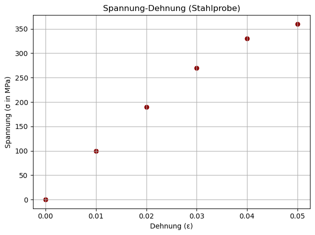

In diesem Kapitel führen wir kurz in die Verwendung von Bibliotheken ein. Es gibt unzählige praktische Bibliotheken, die Entwicklerinnen und Entwicklern auf der ganzen Welt das Leben leichter machen. Natürlich können wir im Rahmen dieser Einführung nur einen kurzen Einblick geben: Wir erklären allgemein, was eine Bibliothek ist, wie man sie verwendet und installiert, und werfen dann einen exemplarischen Blick auf bekannte Bibliotheken, die Ihnen mit hoher Wahrscheinlichkeit in Ihren Projekten begegnen und helfen werden.
9.1 Einführung
Eine Bibliothek ist eine Sammlung von fertigem Code, die Sie in Ihrem Programm nutzen können. So müssen Sie das Rad nicht immer wieder neu erfinden! Außerdem sind Bibliotheken oft hochoptimiert, teilweise “unter der Haube” in anderen Programmiersprachen geschrieben, um eine bessere Performance zu erzielen (z. B. in C oder C++).
Bevor wir eine Bibliothek in unserem Programm verwenden können, müssen wir Sie importieren:
import math # importiert die Bibliothek math # jetzt kann math genutzt werden und das geht so:print(math.sqrt(256)) # Wurzel ziehenprint(math.cos(2*math.pi)) # Trigonometrieprint(math.factorial(5)) # Fakultät# vieles mehr ist möglich mit math ...
16.0
1.0
120
Wie Sie am Beispiel erkannt haben, wird der Name der Bibliothek den Funktionen vorangestellt. Über den . greifen Sie auf die Inhalte der Bibliothek zu. Man kann auch nur ausgewählte Elemente der Bibliothek importieren:
from math import cos, sin, pi # nur die genannten werden importiertprint(cos(2*pi) + sin(2*pi)) # das Präfix math fällt weg
0.9999999999999998
Tipp: Ich bevorzuge es, zu sehen, aus welcher Bibliothek die Funktionen stammen. So werden auch potenzielle Konflikte mit eigenen Bezeichnungen vermieden. Daher nutze ich meistens die obere Variante.
Aliase
Es ist möglich und auch üblich, einer Bibliothek beim Importieren einen Kurznamen (sog. Alias) zu geben. Wir könnten z.B. die math-Bibliothek mit m abkürzen:
import math as m # importiert math mit Alias m# Verwendung:print(m.sqrt(225), m.cos(m.pi), m.factorial(3))
15.0 -1.0 6
Häufig verwendete Bibliotheken haben mittlerweile Standard-Aliase, die so gut wie immer verwendet werden. Wir listen einige berühmte Beispiele auf:
Bibliothek
Typischer Alias
Import
Anwendungsbereich
numpy
np
import numpy as np
Numerische Mathematik
matplotlib.pyplot
plt
import matplotlib.pyplot as plt
Visualisierung / Diagramme
pandas
pd
import pandas as pd
Datenanalyse und Tabellenverarbeitung
seaborn
sns
import seaborn as sns
Statistische Datenvisualisierung
tensorflow
tf
import tensorflow as tf
Machinelles Lernen / Neuronale Netze
Installation
Nicht alle Bibliotheken sind auf unserem System vorinstalliert, sondern müssen bei Bedarf erst heruntergeladen und installiert werden. Das geht zum Glück mithilfe von Paketverwaltungssoftware wie pip oder anaconda sehr einfach. Nehmen wir an, wir möchten die Bibliothek requests (für http-Requests) installieren:
Mit pip (für Standard-Python ohne Anaconda)
Im Terminal oder in der Konsole eingeben:
pip install requests
Mit Anaconda
Starten Sie Anaconda Prompt und tippen Sie ein:
conda install requests
Über die grafische Oberfläche von Anaconda
Starten Sie Anaconda Navigator.
Wählen Sie „Environments“ und setzen Sie den Filter auf “not installed” oder “all”.
Verwenden Sie “Search Packages”, um das gewünschte Paket zu finden (z. B. requests).
Häkchen setzen und „Apply“ klicken.
Kurze Begriffsklärung: Modul, Paket, Bibliothek
Diese drei Begriffe gehen manchmal durcheinander und werden nicht immer sauber voneinander getrennt:
Modul:
Eine einzelne Datei mit Python-Code (.py), die Funktionen, Klassen oder Variablen enthält.
Paket: Ein strukturierter Ordner mit mehreren Modulen.
Bibliothek: Ein allgemeiner Begriff für Module und Pakete, die bestimmte Aufgaben lösen (z. B. Datenanalyse).
Bei der praktischen Verwendung von Bibliotheken ist die Unterscheidung in der Regel nicht so wichtig: Wir importieren math (ein Modul) oder pandas (ein Paket), um Probleme zu lösen, die uns in unseren Projekten begegnen. Wenn wir dagegen selbst Module oder Bibliotheken für die Community entwicklen möchten, werden die Details natürlich wichtig.
9.2 NumPy
Überblick
NumPy (Numerical Python) ist eine der zentralen Bibliotheken im wissenschaftlichen Rechnen mit Python. Sie bietet leistungsfähige Datenstrukturen, insbesondere das n-dimensionale Arrays, und eine breite Palette mathematischer Funktionen zur effizienten Verarbeitung großer Datenmengen. Für Ingenieurinnen und Ingenieure ist NumPy besonders wertvoll, da es numerische Simulationen, Datenanalyse und Algorithmenentwicklung deutlich vereinfacht und beschleunigt. Damit es keine Missverständnisse gibt: Numerisch bedeutet, dass wir in Numpy immer mit konkreten Zahlen rechnen und solche als Ergebnisse erhalten. Das Gegenteil wären symbolische Berechnungen, bei denen es darum geht eine Formel als Lösung für ein Problem zu finden. Hierfür gibt es übrigens auch eine Python-Bibliothek: SymPy (Symbolic Python).
Drei Highlights von NumPy für die Ingenieurpraxis:
Effiziente Matrixoperationen: Lineare Algebra ist das Rückgrat vieler ingenieurtechnischer Berechnungen, z. B. in der Statik, Regelungstechnik oder Signalverarbeitung. NumPy ermöglicht schnelle und speichereffiziente Operationen auf Matrizen – inklusive Inversion, Eigenwertberechnung oder Lösung linearer Gleichungssysteme.
Schnelle Datenverarbeitung: Dank einer optimierten Implementierung (die Bibliothek wurde in C geschrieben!) ist NumPy um ein Vielfaches schneller als Standard-Python-Schleifen. Das ist ideal für Messdatenanalysen oder Simulationen, bei denen Zeit eine kritische Rolle spielt.
Nahtlose Integration mit anderen Tools: NumPy bildet die Grundlage für viele andere wissenschaftliche Bibliotheken wie SciPy, pandas oder Matplotlib. So lässt es sich leicht in bestehende Arbeitsabläufe integrieren – vom Datenimport bis zur Visualisierung der Ergebnisse.
Demo: Matrixoperationen mit Arrays
import numpy as np# 3x3 Matrix als np.array# np.arrays werden aus Listen erzeugt:A = np.array([[2, 1, 3], [0, -1, 4], [5, 2, 0]])# ein Vektorb = np.array([1, 2, 3])# Matrix mal Vektor v = A * b:v = np.dot(A, b)# WARNUNG: Es ist wichtig, np.dot zu verwenden und nicht *# Letzteres führt kein Vektorprodukt, sondern eine # elementweise Multiplikation durch! print("A * b = ",v)
A * b = [13 10 9]
Wir können viele Operationen aus der linearen Algebra direkt ausführen:
A.T # liefert die transponierte Matrix# alternativ: np.transpose(A)
array([[ 2, 0, 5],
[ 1, -1, 2],
[ 3, 4, 0]])
np.linalg.eigvals(A) # liefert die Eigenwerte von A
array([ 5.83891641, -0.80708431, -4.0318321 ])
np.linalg.eig(A) # liefert Eigenwerte und Eigenvektoren von A
x = np.linalg.solve(A, b) # löst das lineare Gleichungssystem: A*x = bprint(x)
[ 1.31578947 -1.78947368 0.05263158]
Überprüfen wir das Ergebnis:
print(np.dot(A, x), "Zum Vergleich: ", b)
[1. 2. 3.] Zum Vergleich: [1 2 3]
Numpy-Arrays
Die Arrays von Numpy sind ein hochoptimierter Datentyp für numerische Berechnungen. Anders als bei Listen können Sie innerhalb eines Arrays nicht mehr Datentypen wild mischen, sondern müssen konsequent einen Datentyp für alle Einträge verwenden, meistens float oder int. Zwei Besonderheiten von Numpy-Arrays möchten wir hier herausstellen:
Vektorisierte Operationen: NumPy bietet vektorisierten Code, d. h. mathematische Operationen wie Addition, Subtraktion, Multiplikation auf Arrays werden auf allen Elementen gleichzeitig angewendet. Dies ist viel schneller als manuelle Schleifen über Listen!
Broadcasting: NumPy unterstützt Broadcasting, sodass auch Arrays unterschiedlicher Formen miteinander rechnen können, ohne dass wir diese mühsam aneinander anpassen müssen.
Demo: Vektorisierung
Wir erstellen zunächst ein Array mit \(x\)-Werten, an denen wir eine Funktion auswerten wollen:
x_values = np.array(range(10)) # Array mit den x-Werten 0, 1, 2, ..., 9 print(x_values)
[0 1 2 3 4 5 6 7 8 9]
An diesen Stellen sollen Funktionswerte der folgenden Funktion berechnet werden:\(f(x) = 3\,x^3 - x^2 + 2\,x + 1\). Vektorisierung bedeutet, dass wir die Rechenoperationen mit dem Array x_values durchführen können und NumPy diese elementweise durchführt. Das ist kinderleicht:
f_values =3* x_values**3- x_values**2+2* x_values +1# berechnet f(x) für jeden x-Wertprint(f_values) # das Ergebnis ist wieder ein Array!
[ 1 5 25 79 185 361 625 995 1489 2125]
Wir benötigen keine Schleife und die Operationen werden sogar optimiert, also sehr schnell, ausgeführt. In der numerischen Mathematik kommen solche Operationen sehr häufig vor. Im folgenden Abschnitt werden wir sehen, wie man Vektorisierung verwendet, um mit wenigen Zeilen einen Funktionsgraphen zu zeichnen.
Wir können natürlich auch komplexere mathematische Funktionen berechnen. Das wollen wir an \(g(x) =\frac{1}{2} \sqrt{x}\) und \(h(x) = x\, e^{x^2}\) demonstrieren:
g_values =1/2* np.sqrt(x_values) # berechnet Funktionswerte von g an den x-Stellenprint(g_values)
Wichtig ist, dass wir in den beiden letzten Beispielen die Mathe-Funktionen aus NumPy verwendet haben, also np.sqrt(...) bzw. np.exp(...). Andere Mathebibliotheken (z.B. math) sind nicht für vektorisierte Operationen auf NumPy-Arrays ausgelegt.
Demo: Broadcasting
Ein Beispiel zu Broadcasting:
A = np.array([[1, 0, 0], [0, 2, 0], [0, 0, 3]])v = np.array([1, 2, 3])B = A + v # das passt eigentlich nicht!
Die letzte Zeile führt überraschenderweise nicht zu einem Programmfehler, obwohl die Dimensionen von A und v überhaupt nicht zusammenpassen. In solchen Fällen geschieht Broadcasting: “Was nicht passt, wird passend gemacht (falls möglich)!”. Schauen wir uns das Ergebnis genauer an:
print(B)
[[2 2 3]
[1 4 3]
[1 2 6]]
Wir sehen: Der Vektor v wurde zeilenweise addiert. Für das Broadcasting gibt es ein klar definiertes Vorgehen, wie Arrays aneinander angeglichen werden und in welchen Fällen es überhaupt möglich ist. Man muss aufpassen, dass man kein unbeabsichtigtes Broadcasting durchführt und unerwartete Ergebnisse erhält. Aber so tief wollen wir an dieser Stelle nicht einsteigen.
linspace und arange
Diese beiden Funktionen sind in der Praxis sehr nützlich und werden oft verwendet:
# Mit np.linspace(begin, end, num) erzeugt man einen Array mit Punkten zwischen# den Grenzen begin und end (beide eingeschlossen). Es werden insgesamt num # Punkte in gleichmäßigen Abständen erzeugt.a = np.linspace(0, 10, 5) # 5 Punkte zwischen 0 und 10print(a)b = np.linspace(0, 10, 10) # 10 Punkteprint(b)
# Mit np.arange(begin, end, step) erreichen Sie etwas ähnliches, # allerdings geben Sie nicht die Anzahl der Punkte, sondern # die Schrittweite step vor. a = np.arange(0, 10, 1)print(a) # wie Sie sehen, gehört end nicht dazu (analog zur range-Funktion)b = np.arange(0, 10+1.25, 1.25) # hier stellt man sicher, dass 10 überschritten wirdprint(b)
Die beiden Funktionen linspace(...) und arange(...) werden oft zusammen mit Vektorisierung verwendet. Zum Beispiel erstellt man mit linspace(...) einen Array von \(x\)-Werten und berechnet dann mithilfe von Vektorisierung die zugehörigen \(y\)-Werte einer Funktion. Das könnte so aussehen wie im folgenden Beispiel:
xs = np.linspace(-np.pi, np.pi, 100) # 100 Punkte zwischen -pi und piys = np.sin(xs) # Funktionswerte von sin(x) an den zuvor berechneten Stellenprint("Auswertung an einer Beispielstelle:")print("x =", round(xs[20],2), ", sin(x)=", round(ys[20],2))# Vorschau auf den nächsten Abschnitt: # Mit den beiden Arrays xs und ys kann die Funktion geplottet werden.
Auswertung an einer Beispielstelle:
x = -1.87 , sin(x)= -0.95
Übungen:
Erzeugen Sie 100 \(x\)-Werte zwischen \(-2\) und \(5\) und berechnen Sie zu jedem dieser Werte den Funktionswert von \(f(x) = \frac{e^{-x}}{1 + x^2}\). Geben Sie exemplarisch den Funktionswert für ein zufällig ausgewähltes \(x\) aus (auf zwei Nachkommastellen gerundet)!
Erzeugen Sie einen Array, der 1000 Zeitpunkte zwischen t=0 s und t= 100 s beinhaltet. Ein Körper befinde sich zum Zeitpunkt t=0 an der Position x(0)=0 und bewege sich gleichmäßig mit der Geschwindigkeit v= 2.5 m/s in positive x-Richtung. Erstellen Sie einen Array, der die x-Position zu jedem Zeitpunkt t angibt. Geben Sie die Position zum Zeitpunkt t=100 s aus.
Multiplizieren Sie zwei 3x3 Matrizen miteinander.
Wie können Sie Broadcasting und transpose kombinieren, um einen Vektor v zu jeder Spalte einer Matrix zu addieren?
Lösungen:
Code
import numpy as np# Übung 1 xs = np.linspace(-2, 5, 100)ys = np.exp(-xs)/(1+ xs**2)print(f"Übung 1: f({round(xs[30],2)}) = {round(ys[30],2)}")# Übung 2ts = np.linspace(0,100, 1000)xs =2.5* ts # x = velocity * timeprint("\nÜbung 2:\nx(t = 100s) =", xs[-1])# Übung 3A = np.array([[1, 2, 3], [1, 2, 3], [1, 2, 3]])B = np.ones_like(A) # erzeugt eine Matrix mit derselben Form wie A, aber mit lauter EinsenC = np.dot(A, B)print("\nÜbung 3:", "A =", A, "B = ",B, "A * B = ", C, sep="\n")# Übung 4A = np.array([[1, 2, 3], [1, 2, 3], [1, 2, 3]])v = np.array([-1, 0, -2]) # soll zu jeder Spalte addiert werden# A wird transponisert und v addiert,# dann wird das Ergebnis zurücktransponiert:result = (A.T + v).Tprint("\nÜbung 3:","A =", A,"v =",v, "A + v (spaltenweise)", result, sep="\n")
9.3 Matplotlib
Matplotlib ist die Standard-Bibliothek in Python zum Erstellen von Diagrammen. Der am häufigsten verwendete Teil ist das Untermodul pyplot (eine Schnittstelle, über die das Modul leicht zu bedienen ist), das man fast immer mit dem Alias plt importiert.
import matplotlib.pyplot as plt # Standard-Import für matplotlib
Mit Matplotlib kann man die unterschiedlichsten Arten von Diagrammen erzeugen. Auch hier können wir nur ein paar exemplarische Beispiele demonstrieren.
Eine Funktion plotten
Um eine Funktion zu plotten, arbeiten wir mit Matplotlib und NumpPy zusammen: NumPy erzeugt die x- und y-Werte, Matplotlib stellt diese in einem einfachen Linienplot dar. Linienplot heißt, dass gerade Linien von Punkt zu Punkt gezogen werden. Wenn es ausreichend viele Punkte sind, entsteht der Eindruck einer glatten Kurve. Los geht’s:
import matplotlib.pyplot as pltimport numpy as np# Punkte erzeugen mit Numpyx_values = np.linspace(0, 50, 100) # 100 Punkte zwischen 0 und 50y_values = x_values**2# Vektorisierung: so einfach rechnet man mit Numpy-Arrays!# Liniendiagramm erzeugen mit Matplotlib plt.plot(x_values, y_values)# Es folgen Einstellungen zur Darstellung (z.B. Beschriftung)plt.title(r"$y = x^2$") # Titel plt.xlabel("x") # Beschriftung x-Achseplt.ylabel("y") # Beschriftung y-Achseplt.tight_layout() # optimiert bei Bedarf den Zeichenbereich, damit nix abgeschnitten wirdplt.grid(True) # zeigt ein Gitter zum einfacheren Ablesen der Werte# Finally:# Der eigentliche Befehl zum Rendern (= Zeichnen).plt.show() # öffnet ein Fenster (oder rendert im Notebook) und zeigt den Plot.# PS: Der Befehl plt.show() wird von Jupyter oft automatisch aufgerufen, an anderer Stelle braucht man# ihn aber explizit. Wir schreiben ihn daher immer hin.
Verwendung von LaTeX-Befehlen in Strings
Beim Plotten von Funktionen verwendet man häufig LaTeX-Befehle, um Achsen, Titel oder Labels zu beschriften. Beispielsweise kann die Funktion
\(f(x)=\frac{1}{1+x^2}\)
in Matplotlib so als String dargestellt werden:
"$\frac{1}{1+x^2}$"
In Python hat der Backslash \ jedoch die Bedeutung eines Escape-Zeichens, z. B. für Zeilenumbrüche (\n) oder Tabulatoren (\t). Damit Python den Backslash in LaTeX-Befehlen wörtlich interpretiert, verwendet man Raw Strings, indem man ein kleines r vor das String-Literal setzt:
r"\frac{1}{1+x^2}"
r"\sqrt{x}"
Dieses r teilt dem Python-Interpreter mit, dass alle Backslashes in diesem String unverändert bleiben, wodurch LaTeX-Befehle korrekt dargestellt werden.
Messwerte in einem Streudiagramm darstellen
import matplotlib.pyplot as plt# Messwertedehnung = [0.0, 0.01, 0.02, 0.03, 0.04, 0.05]spannung = [0, 100, 190, 270, 330, 360] # in MPa# Streudiagramm mit Matplotlib erzeugenplt.scatter(dehnung, spannung, color='darkred')# Einstellungen für die Darstellung:plt.title("Spannung-Dehnung (Stahlprobe)")plt.xlabel("Dehnung (ε)")plt.ylabel("Spannung (σ in MPa)")plt.grid(True)plt.tight_layout()# Finally: Rendernplt.show()

Haben Sie auch sofort den Gedanken: “Kann ich da eine Kurve durchlegen?”
Sie können! Allerdings muss die Kurve zunächst berechnet werden, Matplotlib ist nur für die visuelle Darstellung verantwortlich. Eine einfache Möglichkeit bietet Numpy mit polynomialer Regression: Ein Polynom vorgegebenen Grades wird an die Messwerte angepasst. Das sieht im Ergebnis zum Beispiel so aus:
Code
# Polynom 2. Ordnung fittenkoeff = np.polyfit(dehnung, spannung, deg=2)polynom = np.poly1d(koeff)x_poly = np.linspace(min(dehnung), max(dehnung), 200) # x-Werte für das Polynom# Plottenplt.scatter(dehnung, spannung, label="Messdaten", color='darkred')plt.plot(x_poly, polynom(x_poly), label="Polynom 2. Ordnung", color="green")# Einstellungen zur Darstellungplt.title("Spannung-Dehnung (Stahlprobe) mit Polynom-Fit")plt.legend()plt.grid(True)plt.tight_layout()# Finally: Rendernplt.show()
Plotten Sie die Funktion \(f(x)= 1 + 3\,\sqrt{x}\) im Bereich von 0 bis 10. Tipp: np.sqrt für die Wurzel.
Gegeben sind mittlere Tagestemperaturen in Grad Celsius für die Tage einer Woche: temperatures = np.array([15, 17, 14, 20, 22, 19, 16]). Stellen Sie den Verlauf visuell dar.
Gegeben sind die Verkaufszahlen von vier verschiedenen Produkten im letzten Monat: sales_numbers = [50, 75, 30, 90]. Stellen Sie die Daten in einem Balkendiagramm dar.
Lösungen:
Code
import matplotlib.pyplot as pltimport numpy as np# Übung 1xs = np.linspace(0, 10, 500)ys =1+3* np.sqrt(xs)plt.plot(xs, ys)plt.title(r"Ü1: $f(x)= 1 + 3\sqrt{x}$") # das kleine r: raw string, damit der Backslash \ als solcher erkannt wirdplt.xlabel("x")plt.ylabel("y")plt.tight_layout()plt.grid(True)plt.show()# Übung 2days = ['Mo', 'Di', 'Mi', 'Do', 'Fr', 'Sa', 'So']temperatures = np.array([15, 17, 14, 20, 22, 19, 16])plt.plot(days, temperatures, marker='o') # mit marker='o' markieren wir die Einzelpunkte# scatter-Plot wäre auch möglichplt.title("Ü2: Temperaturverlauf")plt.xlabel("Tag")plt.ylabel("mittlere Temperatur [°C]")plt.tight_layout()plt.grid(True)plt.show()# Übung 3products = ["A", "B", "C", "D"]sales_numbers = [50, 75, 30, 90]plt.bar(products, sales_numbers)plt.title("Ü3: Verkaufszahlen im letzten Monat")plt.ylabel("Verkäufe")plt.tight_layout()plt.show()
9.4 Pandas
Pandas ist eine Python-Bibliothek zur Datenanalyse und -verarbeitung. Sie macht es einfach, mit tabellarischen Daten zu arbeiten – wie man es von Excel oder MATLAB kennt, nur viel mächtiger! Sie ist ideal für CSV-Dateien, Zeitreihen, Sensorlogs, usw.
Stellen Sie sich vor, Sie hätten eine CSV-Datei pruefstand.csv, die Messdaten von einem Elektromotor-Prüfstand auflistet, evtl. mit Tausenden oder Zehntausenden an Einträgen (Die folgenden Beispieldaten wurden von ChatGPT erzeugt, keine Garantie für Realitätsnähe…):
Mit pandas ist es ein Leichtes, die Daten zu analysieren! Wir zeigen nur ein paar wenige der vielen Features, die pandas anbietet.
import pandas as pd# CSV einlesendf = pd.read_csv(r"./data/pruefstand.csv") # oder auch aus einer URL oder Excel-Datei# Die Abkürzung df ist sehr gebräuchlich und steht für 'Data Frame' = eine Tabelle# Kurze Übersicht der Datendf.head() # Zeigt die ersten 5 Zeilen
zeit_s
drehzahl_rpm
drehmoment_Nm
temperatur_C
strom_A
spannung_V
0
0
1497.922348
35.057229
24.858087
4.709792
400.714229
1
2
1483.145815
37.497241
25.967905
4.846947
400.884588
2
4
1543.003056
34.688758
25.033300
4.003364
401.764352
3
6
1478.880751
33.575622
25.722095
3.881862
401.111999
4
8
1509.488872
34.695091
25.009793
4.252818
399.137301
df.describe() # liefert statistische Kennzahlen aller Größen
zeit_s
drehzahl_rpm
drehmoment_Nm
temperatur_C
strom_A
spannung_V
count
500.000000
500.000000
500.000000
500.000000
500.000000
500.000000
mean
499.000000
1498.925139
34.886097
45.000590
4.178905
400.101695
std
288.963666
29.086169
1.713803
11.613131
0.363051
0.983697
min
0.000000
1407.077718
29.012827
24.858087
3.188436
396.918353
25%
249.500000
1479.236970
33.701481
34.897158
3.920708
399.481565
50%
499.000000
1499.585548
34.930608
44.786135
4.169030
400.070542
75%
748.500000
1516.939953
36.059463
55.105094
4.442258
400.795715
max
998.000000
1583.667191
38.831586
65.451653
5.151121
403.723784
Der describe-Befehl ist sehr nützlich: Wir sehen auf einen Blick, dass unsere Datei 500 Zeilen beinhaltet und erhalten Mittelwerte, Standardabweichungen, Wertebereiche und Quantile aller Messgrößen. Ein erster aufschlussreicher Überblick über unsere Daten!
# Mittelwerte oder andere Kennzahlen können # ganz einfach auch einzeln abgefragt werden:mean_torque = df["drehmoment_Nm"].mean()print(f"Mittleres Drehmoment: {round(mean_torque, 2)} Nm")mean_temperature = df["temperatur_C"].mean()print(f"Mittlere Temperatur: {round(mean_temperature, 2)} °C")# Wie diese Beispiele zeigen, greift man auf einzelne Spalten# eines Data Frames über einen Indexzugriff zu, ganz analog zu# Dictionaries.
Mittleres Drehmoment: 34.89 Nm
Mittlere Temperatur: 45.0 °C
Sie können auch einfach neue Spalten erzeugen, wie das folgende Beispiel zeigt:
df["power_W"]=df["strom_A"]*df["spannung_V"]df.head() # achten Sie auf die neue Spalte.
zeit_s
drehzahl_rpm
drehmoment_Nm
temperatur_C
strom_A
spannung_V
power_W
0
0
1497.922348
35.057229
24.858087
4.709792
400.714229
1887.280700
1
2
1483.145815
37.497241
25.967905
4.846947
400.884588
1943.066195
2
4
1543.003056
34.688758
25.033300
4.003364
401.764352
1608.408762
3
6
1478.880751
33.575622
25.722095
3.881862
401.111999
1557.061363
4
8
1509.488872
34.695091
25.009793
4.252818
399.137301
1697.458407
Selbstverständlich können wir nun auch Matplotlib in Kombination mit Pandas einsetzen, um Daten zu visualisieren:
import matplotlib.pyplot as plt# Plot: Temperatur über Zeitplt.plot(df["zeit_s"], df["temperatur_C"], label="Temperatur [°C]", color="red")plt.xlabel("Zeit [s]")plt.ylabel("Temperatur [°C]")plt.title("Prüfstandsdaten")plt.legend()plt.grid(True)plt.tight_layout()plt.show()
Ein Data Frame kann auch aus einem Dictionary erzeugt werden:
Übungen: Erzeugen Sie das Data Frame, wie im letzten Beispiel gezeigt.
1. Fügen Sie eine Spalte Umsatz hinzu (Umsatz = Preis * Verkaufte Menge).
2. Finden Sie das Produkt mit dem höchsten Umsatz.
3. Erstellen Sie ein Balkendiagramm mit Matplotlib, das den Umsatz jedes Produkts zeigt.
4. Wie groß sind Mittelwert und Standardabweichung des Umsatzes?
Lösung:
Code
import pandas as pdimport matplotlib.pyplot as plt# Daten erstellendata = {'Produkt': ['Produkt A', 'Produkt B', 'Produkt C', 'Produkt D'],'Preis': [20, 35, 50, 15],'Verkaufte Menge': [100, 150, 80, 200]}df = pd.DataFrame(data)# 1. Umsatz berechnen und als Spalte hinzufügendf['Umsatz'] = df['Preis'] * df['Verkaufte Menge']# 2. Kann durch einfaches print gelöst werden:print(df) # Produkt B hat den höchsten Umsatz!# 3. Balkendiagramm erstellenplt.bar(df['Produkt'], df['Umsatz'], color=['red', 'blue', 'green', 'purple'])plt.title('Umsatz der Produkte')plt.xlabel('Produkt')plt.ylabel('Umsatz')plt.show()# 4. Statistische Kennzahlenprint("Mittlerer Umsatz: ", df['Umsatz'].mean(), "Standardabweichung: ", df['Umsatz'].std())# Kann auch über describe abgelesen werden: df.describe()